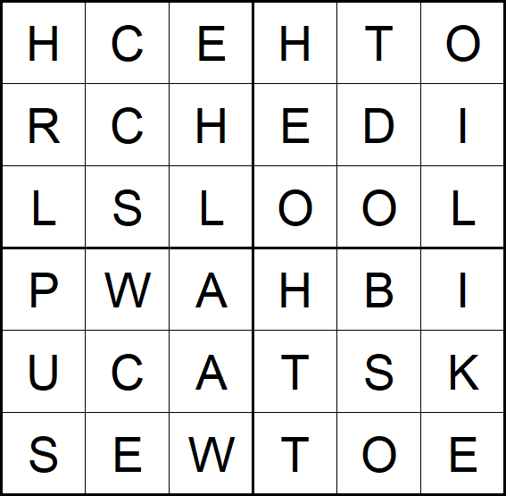

Uncover the dots' secret!

Having read Mathias Sandorf by Jules Verne, this immediately smelled like a turning grille cipher, where a mask with several holes is placed on the code, and the letters visible through the holes are noted. The mask is then successively rotated four times by 90° and the process repeated to uncover the secret message.
One quarter of the mask seems to be missing. If the partial mask is used to decode, we get:
| 0° | red | HELLOUC |
| 90° | green | CHOCOLT |
| 180° | blue | DIWHITE |
| 270° | orange | HPASSWO |
Using the completed mask on the letter grid gives:
| 0° | red | HELLOBUCK |
| 90° | green | CHOCOLATE |
| 180° | blue | RDISWHITE |
| 270° | orange | THEPASSWO |